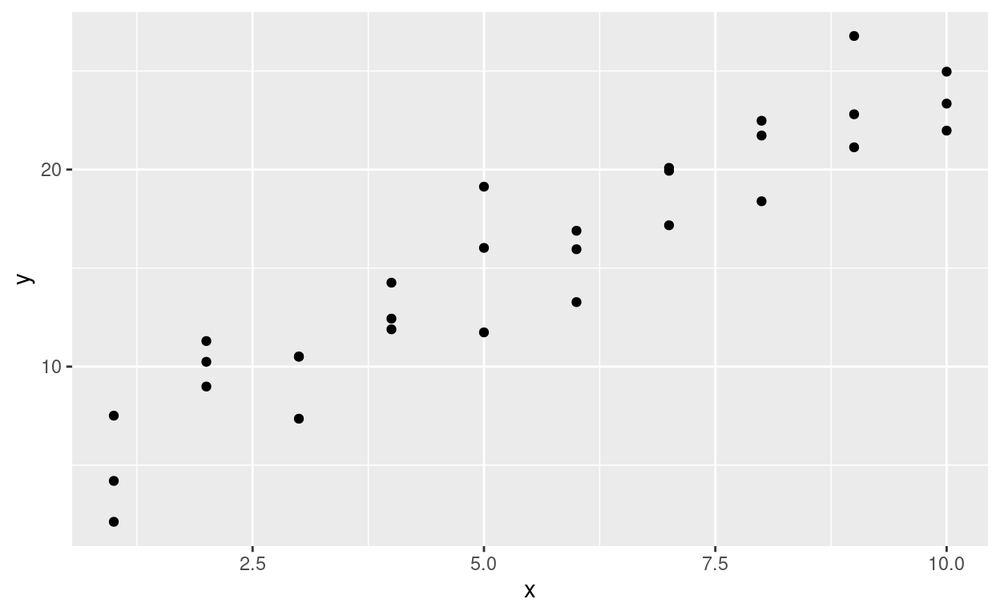
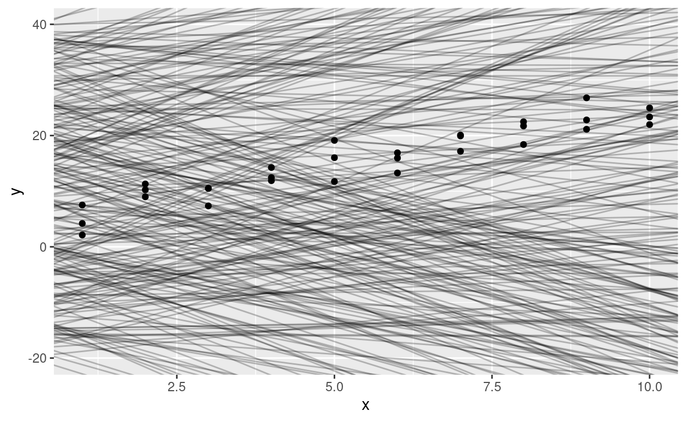
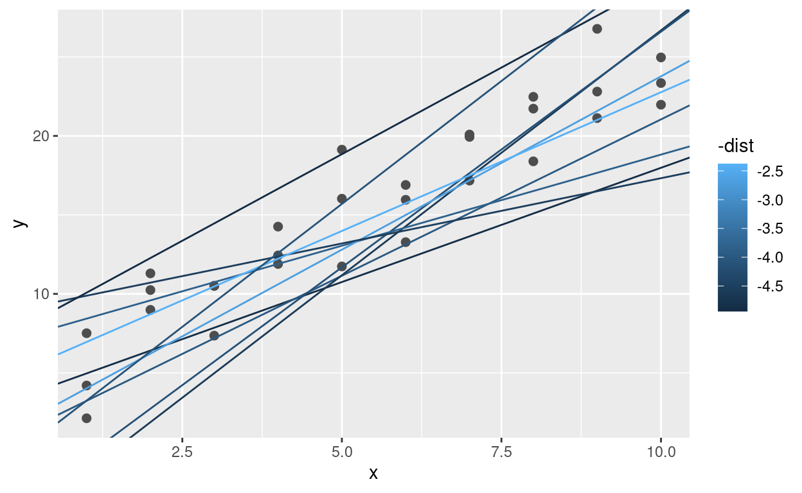
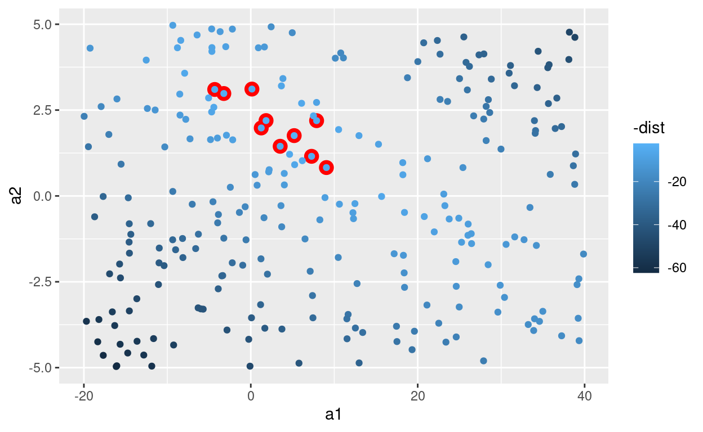
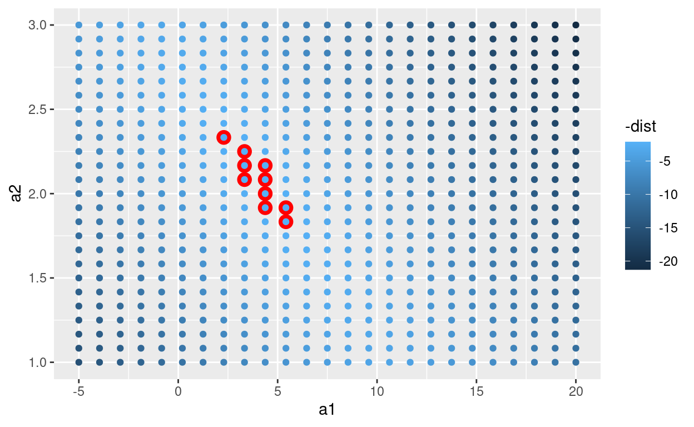
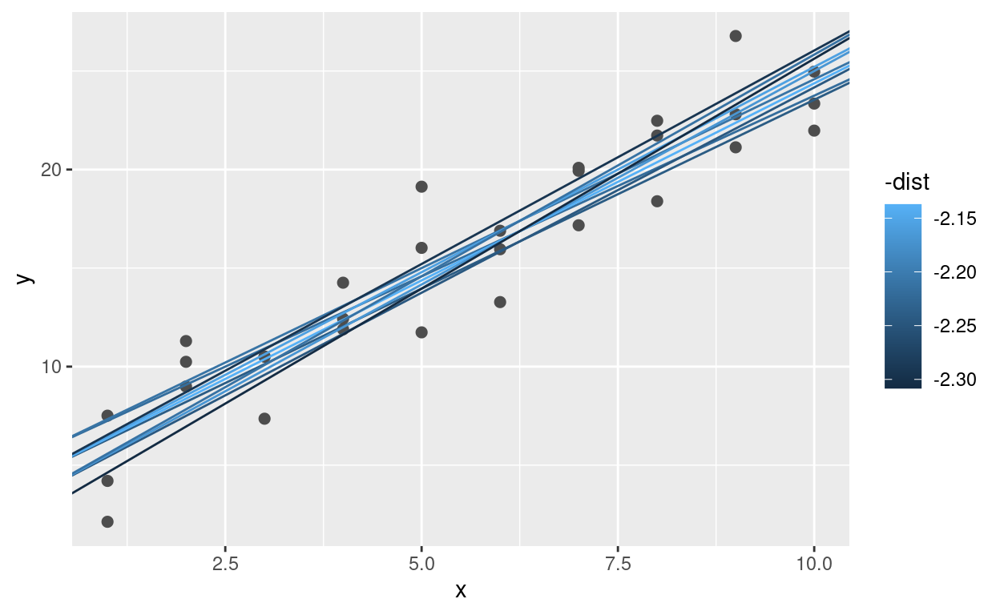
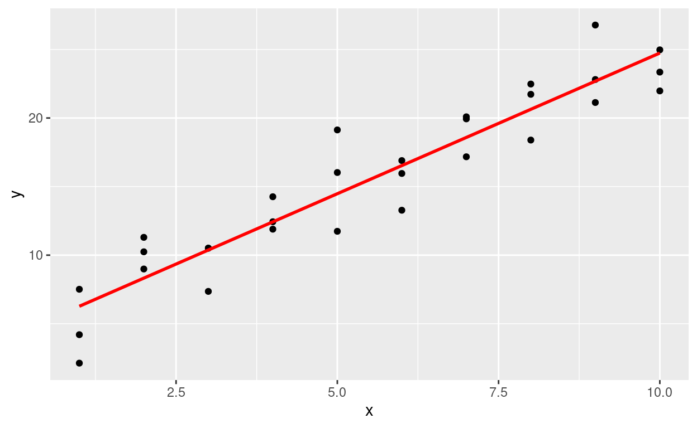
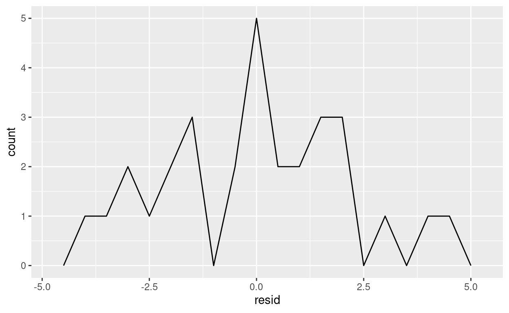
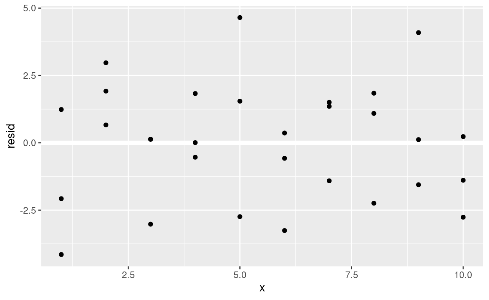

Introducción
Ahora que estás equipado con potentes herramientas de programación, finalmente podemos volver al modelado. Utilizarás sus nuevas herramientas de programación y gestión de datos para adaptarse a muchos modelos y comprender cómo funcionan.
El enfoque de este curso es la exploración, no la confirmación o la inferencia formal. Pero aprenderás algunas herramientas básicas que lo ayudarán a comprender la variación dentro de tus modelos.
El objetivo de un modelo es proporcionar un resumen simple de baja dimensión de un conjunto de datos. Idealmente, el modelo capturará verdaderas “señales” (es decir, patrones generados por el fenómeno de interés) e ignorará el “ruido” (es decir, la variación aleatoria que no le interesa).
Aquí solo cubrimos modelos predictivos que, como su nombre indica, generan predicciones. Hay otro tipo de modelo que no vamos a discutir: modelos de descubrimiento de datos. Estos modelos no hacen predicciones, sino que lo ayudan a descubrir relaciones interesantes dentro de los datos. (Estas dos categorías de modelos a veces se denominan supervisados y no supervisados, pero la terminología no es particularmente esclarecedora).
Desarrollarás una intuición sobre cómo funcionan los modelos estadísticos y le brindará una familia de herramientas útiles que le permitirán utilizar modelos para comprender mejor sus datos:
En los conceptos básicos de modelación, aprenderás cómo funcionan los modelos de forma mecánica, centrándose en la importante familia de modelos lineales. Aprenderás herramientas generales para obtener información sobre lo que le dice un modelo predictivo sobre sus datos, centrándose en conjuntos de datos simulados simples.
En la construcción de modelos, aprenderás a usar modelos para extraer patrones conocidos en datos reales. Una vez que hayas reconocido un patrón importante, es útil hacerlo explícito en un modelo, porque entonces podrá ver más fácilmente las señales más sutiles que quedan.
En varios modelos, aprenderá a usar muchos modelos simples para ayudar a comprender conjuntos de datos complejos. Esta es una técnica poderosa, pero para acceder a ella, necesitará combinar herramientas de modelado y programación.
Estos temas son notables por lo que no incluyen: ninguna herramienta para evaluar modelos cuantitativamente. Eso es deliberado: cuantificar con precisión un modelo requiere un par de grandes ideas que simplemente no tenemos el espacio para cubrir aquí.
Por ahora, dependerá de la evaluación cualitativa y de su escepticismo natural. En Obtener más información sobre los modelos, te indicaremos otros recursos en los que puede obtener más información.
Generación de hipótesis vs confirmación de hipótesis
En esta sección, vamos a utilizar modelos como herramienta de exploración, completando las herramientas para EDA que se presentaron anteriormente. No es así como se suelen enseñar los modelos, pero como verás, los modelos son una herramienta importante: herramienta de exploración.
Tradicionalmente, el enfoque del modelado está en la inferencia o para confirmar que una hipótesis es cierta. Hacer esto correctamente no es complicado, pero es difícil. Hay un par de ideas que debe comprender para hacer inferencias correctamente:
Cada observación puede usarse para exploración o confirmación, no ambas.
Puedes utilizar una observación tantas veces como desees para la exploración, pero solo puede utilizarla una vez para la confirmación. Tan pronto como utilices una observación dos veces, pasará de la confirmación a la exploración.
Esto es necesario porque para confirmar una hipótesis debe utilizar datos independientes de los datos que utilizaste para generar la hipótesis. De lo contrario, será demasiado optimista. No hay absolutamente nada de malo en la exploración, pero nunca debe vender un análisis exploratorio como un análisis confirmatorio porque es fundamentalmente engañoso.
Si realmente desea realizar un análisis confirmatorio, un enfoque es dividir sus datos en tres partes antes de comenzar el análisis:
El 60% de sus datos va a un conjunto de entrenamiento (o exploración). Puede hacer lo que quiera con estos datos: visualizarlos y ajustar toneladas de modelos a ellos.
El 20% se destina a un conjunto de consultas. Puede utilizar estos datos para comparar modelos o visualizaciones a mano, pero no puede utilizarlos como parte de un proceso automatizado.
El 20% se retiene para una prueba. Solo puede usar estos datos UNA VEZ, para probar su modelo final.
Esta partición le permite explorar los datos de entrenamiento, generando ocasionalmente hipótesis candidatas que verifica con el conjunto de consultas. Cuando esté seguro de que tiene el modelo correcto, puede verificarlo una vez con los datos de prueba.
(Tenga en cuenta que incluso cuando realice un modelo confirmatorio, deberá realizar una EDA. Si no realiza ninguna EDA, permanecerá ciego a los problemas de calidad con sus datos).
Conceptos básicos del modelo
Introducción
El objetivo de un modelo es proporcionar un resumen simple de baja dimensión de un conjunto de datos. En el contexto de esta sección, usaremos modelos para dividir datos en patrones y residuos. Los patrones sólidos ocultarán tendencias más sutiles, por lo que usaremos modelos para ayudar a despegar capas de estructura a medida que exploramos un conjunto de datos.
Sin embargo, antes de que podamos comenzar a utilizar modelos en conjuntos de datos reales e interesantes, es necesario comprender los conceptos básicos de cómo funcionan los modelos. Por esa razón, esta sección solo usa conjuntos de datos simulados. Estos conjuntos de datos son muy simples y nada interesantes, pero lo ayudarán a comprender la esencia del modelado antes de aplicar las mismas técnicas a los datos reales.
Hay dos partes en un modelo.
Primero Define una familia de modelos que expresan un patrón preciso, pero genérico, que desea capturar.
Por ejemplo: El patrón puede ser una línea recta o una curva cuadrática. Expresará la familia del modelo como una ecuación como y = a_1 * x + a_2 o y = a_1 * x ^ a_2. Aquí, x e y son variables conocidas de sus datos, y a_1 y a_2 son parámetros que pueden variar para capturar diferentes patrones.
A continuación, genera un modelo ajustado encontrando el modelo de la familia más cercano a tus datos. Esto toma la familia de modelos genéricos y la hace específica, como y = 3 * x + 7 o y = 9 * x ^ 2.
Es importante comprender que un modelo ajustado es solo el modelo más cercano de una familia de modelos. Eso implica que tienes el “mejor” modelo (según algunos criterios); no implica que tenga un buen modelo y ciertamente no implica que el modelo sea “verdadero”. George Box lo expresa bien en su famoso aforismo:
Todos los modelos son incorrectos, pero algunos son útiles.Vale la pena leer el contexto más completo de la cita:
Ahora bien, sería muy notable si cualquier sistema existente en el mundo real pudiera ser representado exactamente por un modelo simple. Sin embargo, los modelos parsimoniosos elegidos astutamente a menudo proporcionan aproximaciones notablemente útiles. Por ejemplo, la ley PV = RT que relaciona la presión P, el volumen V y la temperatura T de un gas "ideal" a través de una constante R no es exactamente cierta para ningún gas real, pero con frecuencia proporciona una aproximación útil y, además, su estructura es informativa ya que surge de una visión física del comportamiento de las moléculas de gas.Para un modelo de este tipo, no es necesario plantearse la pregunta “¿Es el modelo verdadero?”. Si la “verdad” va a ser la “verdad total”, la respuesta debe ser “No”. La única pregunta de interés es “¿Es el modelo esclarecedor y útil?”.
El objetivo de un modelo no es descubrir la verdad, sino descubrir una aproximación simple que aún sea útil.
Requisitos previos
En esta sección usaremos el paquete modelr que envuelve las funciones de modelado de la base R para que funcionen de forma natural en un %>% pipe
library(tidyverse)
library(modelr)
options(na.action = na.warn)Un modelo simple
Echemos un vistazo al conjunto de datos simulado sim1, incluido con el paquete modelr. Contiene dos variables continuas, x e y. Vamos a trazarlos para ver cómo se relacionan:
ggplot(sim1, aes(x, y)) +
geom_point() Puedes ver un patrón fuerte en los datos. Usemos un modelo para capturar ese patrón y hacerlo explícito. Nuestro trabajo es proporcionar la forma básica del modelo.
En este caso, la relación parece lineal, es decir, y = a_0 + a_1 * x.
Comencemos por tener una idea de cómo se ven los modelos de esa familia generando algunos al azar y superponiéndolos en los datos. Para este caso simple, podemos usar geom_abline() que toma una pendiente e intercepta como parámetros. Más adelante aprenderemos técnicas más generales que funcionan con cualquier modelo.
models <- tibble(
a1 = runif(250, -20, 40),
a2 = runif(250, -5, 5)
)
ggplot(sim1, aes(x, y)) +
geom_abline(aes(intercept = a1, slope = a2), data = models, alpha = 1/4) +
geom_point() 
Hay 250 modelos en esta trama, ¡pero muchos son realmente malos! Necesitamos encontrar los buenos modelos haciendo precisa nuestra intuición de que un buen modelo está cerca de los datos.
Necesitamos una forma de cuantificar la distancia entre los datos y un modelo. Luego, podemos ajustar el modelo encontrando el valor de a_0 y a_1 que generan el modelo con la menor distancia de estos datos.
Un lugar fácil para comenzar es encontrar la distancia vertical entre cada punto y el modelo, como en el siguiente diagrama. (Ten en cuenta que he cambiado ligeramente los valores de x para que pueda ver las distancias individuales).

Esta distancia es solo la diferencia entre el valor de y dado por el modelo (la predicción) y el valor de y real en los datos (la respuesta).
Para calcular esta distancia, primero convertimos nuestra familia de modelos en una función R. Esto toma los parámetros del modelo y los datos como entradas, y da los valores predichos por el modelo como salida:
model1 <- function(a, data) {
a[1] + data$x * a[2]
}
model1(c(7, 1.5), sim1)## [1] 8.5 8.5 8.5 10.0 10.0 10.0 11.5 11.5 11.5 13.0 13.0 13.0 14.5 14.5 14.5
## [16] 16.0 16.0 16.0 17.5 17.5 17.5 19.0 19.0 19.0 20.5 20.5 20.5 22.0 22.0 22.0A continuación, necesitamos alguna forma de calcular una distancia total entre los valores predichos y reales. En otras palabras, la gráfica de arriba muestra 30 distancias: ¿cómo colapsamos eso en un solo número?
Una forma común de hacer esto en las estadísticas es utilizar la La desviación de la raíz cuadrática media o el error cuadrático medio. Calculamos la diferencia entre lo real y lo pronosticado, los cuadramos, los promediamos y sacamos la raíz cuadrada. Esta distancia tiene muchas propiedades matemáticas atractivas, de las que no vamos a hablar aquí. ¡Tendrás que creer en mi palabra!
measure_distance <- function(mod, data) {
diff <- data$y - model1(mod, data)
sqrt(mean(diff ^ 2))
}
measure_distance(c(7, 1.5), sim1)## [1] 2.665212Ahora podemos usar purrr para calcular la distancia para todos los modelos definidos anteriormente. Necesitamos una función auxiliar porque nuestra función de distancia espera el modelo como un vector numérico de longitud 2.
library(purrr)
sim1_dist <- function(a1, a2) {
measure_distance(c(a1, a2), sim1)
}
models <- models %>%
mutate(dist = purrr::map2_dbl(a1, a2, sim1_dist))
modelsA continuación, superpongamos los 10 mejores modelos a los datos. Hemos coloreado los modelos por -dist: esta es una manera fácil de asegurarse de que los mejores modelos (es decir, los que tienen la distancia más pequeña) obtengan los colores más brillantes.
ggplot(sim1, aes(x, y)) +
geom_point(size = 2, colour = "grey30") +
geom_abline(
aes(intercept = a1, slope = a2, colour = -dist),
data = filter(models, rank(dist) <= 10)
) También podemos pensar en estos modelos como observaciones, y visualizar con una gráfica de dispersión de a1 vs a2, nuevamente coloreado por -dist. Ya no podemos ver directamente cómo se compara el modelo con los datos, pero podemos ver muchos modelos a la vez. Nuevamente, he resaltado los 10 mejores modelos, esta vez dibujando círculos rojos debajo de ellos.
ggplot(models, aes(a1, a2)) +
geom_point(data = filter(models, rank(dist) <= 10), size = 4, colour = "red") +
geom_point(aes(colour = -dist)) En lugar de probar muchos modelos aleatorios, podríamos ser más sistemáticos y generar una cuadrícula de puntos espaciados uniformemente (esto se llama búsqueda de cuadrícula). Elegí los parámetros de la cuadrícula aproximadamente al observar dónde estaban los mejores modelos en el gráfico de arriba.
grid <- expand.grid(
a1 = seq(-5, 20, length = 25),
a2 = seq(1, 3, length = 25)
) %>%
mutate(dist = purrr::map2_dbl(a1, a2, sim1_dist))
grid %>%
ggplot(aes(a1, a2)) +
geom_point(data = filter(grid, rank(dist) <= 10), size = 4, colour = "red") +
geom_point(aes(colour = -dist)) Cuando superpone los 10 mejores modelos sobre los datos originales, todos se ven bastante bien:
ggplot(sim1, aes(x, y)) +
geom_point(size = 2, colour = "grey30") +
geom_abline(
aes(intercept = a1, slope = a2, colour = -dist),
data = filter(grid, rank(dist) <= 10)
)
Podrías imaginarte haciendo iterativamente la cuadrícula cada vez más fina hasta que te acercaras al mejor modelo. Pero hay una mejor manera de abordar ese problema:
- Una herramienta de minimización numérica llamada búsqueda de Newton-Raphson.
La intuición de Newton-Raphson es bastante simple: eliges un punto de partida y miras a tu alrededor en busca de la pendiente más empinada. A continuación, esquías por esa pendiente un poco y luego repites una y otra vez, hasta que no puedas bajar más. En R, podemos hacer eso con optim():
best <- optim(c(0, 0), measure_distance, data = sim1)
best$par## [1] 4.222248 2.051204ggplot(sim1, aes(x, y)) +
geom_point(size = 2, colour = "grey30") +
geom_abline(intercept = best$par[1], slope = best$par[2])
No se te preocupes demasiado por los detalles de cómo funciona optim(). Es la intuición lo que es importante aquí. Si tiene una función que define la distancia entre un modelo y un conjunto de datos, un algoritmo que puede minimizar esa distancia modificando los parámetros del modelo, puede encontrar el mejor modelo. Lo bueno de este enfoque es que funcionará para cualquier familia de modelos para los que pueda escribir una ecuación.
Hay un enfoque más que podemos utilizar para este modelo, porque es un caso especial de una familia más amplia: los modelos lineales.
Un modelo lineal tiene la forma general y = a_1 + a_2 * x_1 + a_3 * x_2 + ... + a_n * x_ (n - 1).
Entonces, este modelo simple es equivalente a un modelo lineal general donde n es 2 y x_1 es x.
R tiene una herramienta diseñada específicamente para ajustar modelos lineales llamada lm(). lm() tiene una forma especial de especificar la familia de modelos: fórmulas. Las fórmulas se ven como y ~ x, que lm() se traducirá en una función como y = a_1 + a_2 * x.
Podemos ajustar el modelo y mirar el resultado:
sim1_mod <- lm(y ~ x, data = sim1)
coef(sim1_mod)## (Intercept) x
## 4.220822 2.051533¡Estos son exactamente los mismos valores que obtuvimos con optim()!
Detrás de escena lm() no usa optim() sino que aprovecha la estructura matemática de los modelos lineales. Usando algunas conexiones entre geometría, cálculo y álgebra lineal, lm() en realidad encuentra el modelo más cercano en un solo paso, usando un algoritmo sofisticado. Este enfoque es más rápido y garantiza que existe un mínimo global.
Ejercicios
1 - Una desventaja del modelo lineal es que es sensible a valores inusuales porque la distancia incorpora un término al cuadrado. Ajusta un modelo lineal a los datos simulados a continuación y visualiza los resultados. Vuelva a ejecutar varias veces para generar diferentes conjuntos de datos simulados. ¿Qué notas sobre el modelo?
sim1a <- tibble(
x = rep(1:10, each = 3),
y = x * 1.5 + 6 + rt(length(x), df = 2)
)2 - Una forma de hacer que los modelos lineales sean más robustos es utilizar una medida de distancia diferente. Por ejemplo, en lugar de la distancia de la raíz cuadrada media, puede usar la distancia media absoluta:
measure_distance <- function(mod, data) {
diff <- data$y - model1(mod, data)
mean(abs(diff))
}Utiliza optim() para ajustar este modelo a los datos simulados anteriores y compárelo con el modelo lineal.
3 - Un desafío al realizar la optimización numérica es que solo está garantizado encontrar un óptimo local. ¿Cuál es el problema de optimizar un modelo de tres parámetros como este?
model1 <- function(a, data) {
a[1] + data$x * a[2] + a[3]
}Visualización de modelos
Para modelos simples, como el anterior, puede averiguar qué patrón captura el modelo estudiando cuidadosamente la familia del modelo y los coeficientes ajustados. Y si alguna vez tomas un curso de estadística sobre modelado, es probable que dediques mucho tiempo a hacerlo.
Aquí, sin embargo, vamos a tomar un rumbo diferente. Nos centraremos en comprender un modelo observando sus predicciones. Esto tiene una gran ventaja: cada tipo de modelo predictivo hace predicciones (de lo contrario, ¿de qué serviría?), Por lo que podemos usar el mismo conjunto de técnicas para comprender cualquier tipo de modelo predictivo.
También es útil ver lo que el modelo no captura, los llamados residuos que quedan después de restar las predicciones de los datos. Los residuos son poderosos porque nos permiten utilizar modelos para eliminar patrones llamativos y poder estudiar las tendencias más sutiles que quedan.
Predicciones
Para visualizar las predicciones de un modelo, comenzamos generando una cuadrícula de valores espaciados uniformemente que cubre la región donde se encuentran nuestros datos. La forma más sencilla de hacerlo es usar modelr::data_grid(). Su primer argumento es un marco de datos, y para cada argumento subsiguiente encuentra las variables únicas y luego genera todas las combinaciones:
grid <- sim1 %>%
data_grid(x)
grid(Esto se volverá más interesante cuando comencemos a agregar más variables a nuestro modelo).
A continuación, agregamos predicciones. Usaremos modelr::add_predictions() que toma un dataframe y un modelo. Agrega las predicciones del modelo a una nueva columna en el marco de datos:
grid <- grid %>%
add_predictions(sim1_mod)
grid(También puedes usar esta función para agregar predicciones a su conjunto de datos original).
A continuación, graficamos las predicciones. Quizás se pregunte acerca de todo este trabajo adicional en comparación con solo usar geom_abline(). Pero la ventaja de este enfoque es que funcionará con cualquier modelo en R, desde el más simple hasta el más complejo.
Solo estás limitado por tus habilidades de visualización. Para obtener más ideas sobre cómo visualizar tipos de modelos más complejos, puedes probar http://vita.had.co.nz/papers/model-vis.html.
ggplot(sim1, aes(x)) +
geom_point(aes(y = y)) +
geom_line(aes(y = pred), data = grid, colour = "red", size = 1)
Residuos
La otra cara de las predicciones son los residuos. Las predicciones le indican el patrón que ha capturado el modelo y los residuales le indican qué se ha perdido el modelo. Los residuos son solo las distancias entre los valores observados y predichos que calculamos anteriormente.
Agregamos residuos a los datos con add_residuals(), que funciona de manera muy similar a add_predictions().
Sin embargo, ten en cuenta que usamos el conjunto de datos original, no una cuadrícula fabricada. Esto se debe a que para calcular los residuos necesitamos valores de y reales.
sim1 <- sim1 %>%
add_residuals(sim1_mod)
sim1Hay algunas formas diferentes de entender lo que nos dicen los residuos sobre el modelo. Una forma es simplemente dibujar un polígono de frecuencia para ayudarnos a comprender la dispersión de los residuos:
ggplot(sim1, aes(resid)) +
geom_freqpoly(binwidth = 0.5)
Esto ayuda a calibrar la calidad del modelo: ¿a qué distancia están las predicciones de los valores observados? Ten en cuenta que el promedio del residual siempre será 0.
A menudo, querrás volver a crear gráficos utilizando los residuos en lugar del predictor original. Verás mucho de eso en la siguiente sección.
ggplot(sim1, aes(x, resid)) +
geom_ref_line(h = 0) +
geom_point() 
Esto parece un ruido aleatorio, lo que sugiere que nuestro modelo ha hecho un buen trabajo al capturar los patrones en el conjunto de datos.
Ejercicios
1 - En lugar de usar lm() para ajustar una línea recta, puede usar loess() para ajustar una curva suave. Repita el proceso de ajuste del modelo, generación de cuadrículas, predicciones y visualización en sim1 usando loess() en lugar de lm(). ¿Cómo se compara el resultado con geom_smooth()?
2 - add_predictions() está emparejado con collect_predictions() y spread_predictions(). ¿En qué se diferencian estas tres funciones?
3 - ¿Qué hace geom_ref_line()? ¿De qué paquete viene? ¿Por qué es útil e importante mostrar una línea de referencia en los gráficos que muestran los residuos?
4 - ¿Por qué querrías mirar un polígono de frecuencia de residuos absolutos? ¿Cuáles son los pros y los contras en comparación con observar los residuos sin procesar?
Enviar Ejercicios
Material de referencia
Hadley Wickham y Garrett Grolemund, “R for Data Science: Import, Tidy, Transform, Visualize, and Model Data” O’REILLY R for Data Science
Enviar hash al siguiente link -> Aqui